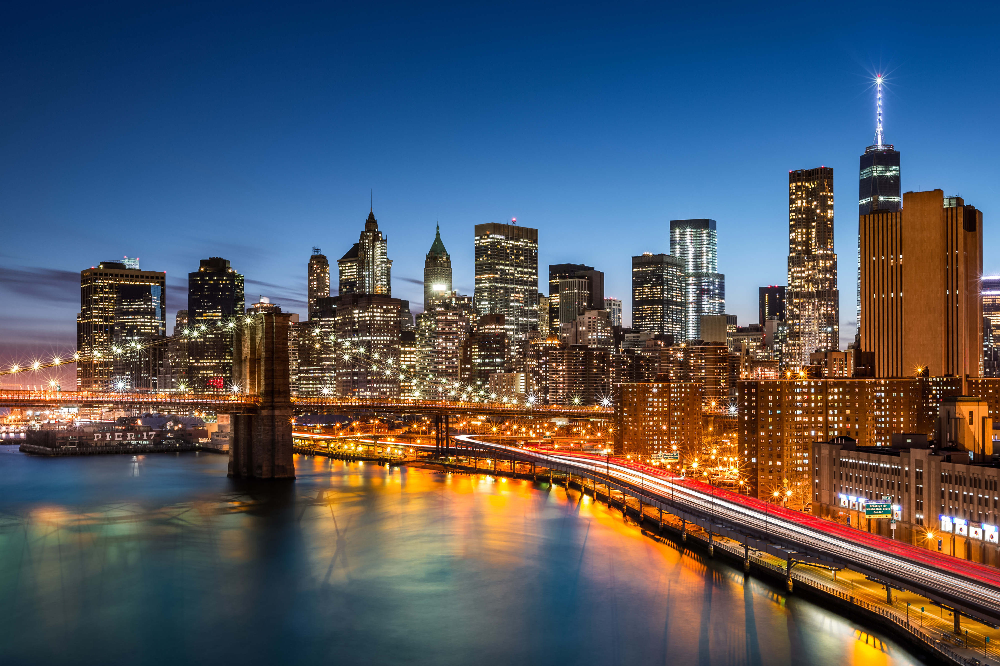
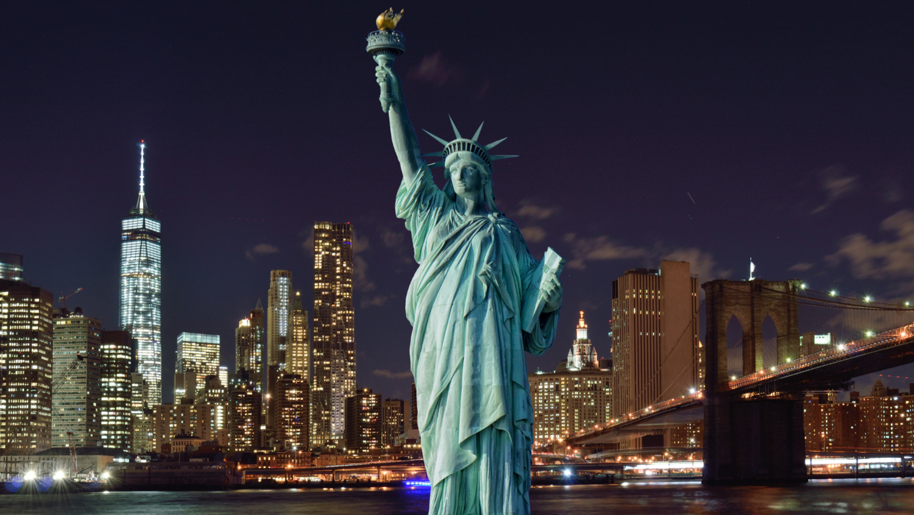
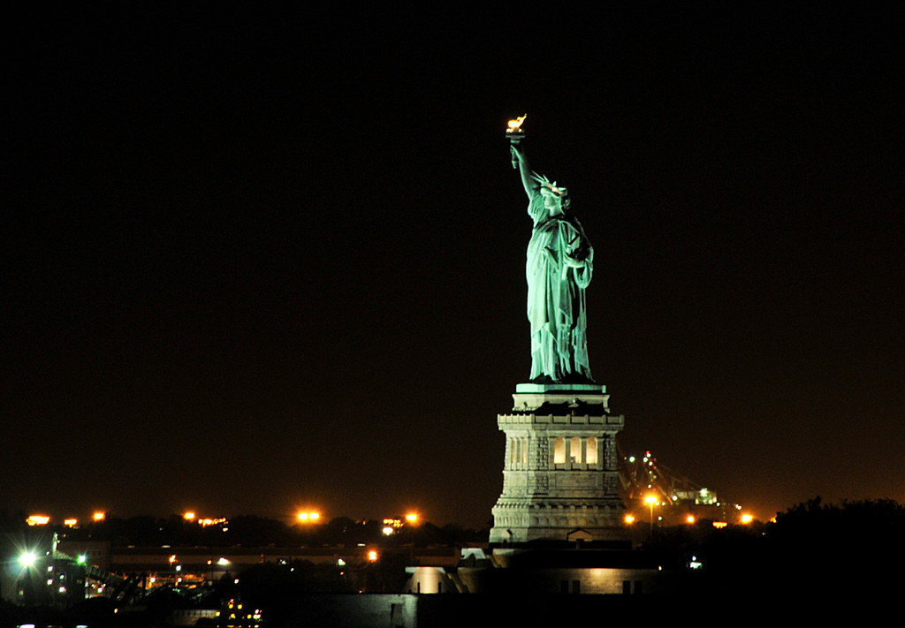

Over mij
 Als laatste op mijn lijst staat New York City. Toen ik een jaar of 10 was zag ik vaak beroemde mensen naar New York City gaan en sindsdien was ik wel benieuwd naar die stad. Ook waren een aantal van mijn vriendinnen in de basisschool naar New York City geweest en hoorde ik leuke verhalen van hun. Zelf ben ik nog nooit überhaupt in Amerika geweest, dus ik zou zeker New York City willen bezoeken en hopelijk is het zo mooi en leuk als de verhalen die ik heb gehoord.
The Statue of Liberty
Natuurlijk zag ik vroeger (en nu) ook heel vaak the Statue of Liberty voorbij komen. Ik begreep eerst niet wat voor betekenis dat standbeeld had, maar nu weet ik dat het "Vrijheidsbeeld" betekent. Het standbeeld staat dus symbool voor de vrijheid en geldt ook als een teken van verwelkoming van iedereen: terugkerende Amerikanen, gasten en immigranten. Ik wist eerst ook niet dat het mogelijk was om het Vrijheidsbeeld te betreden, dit staat dus ook zeker op mijn bucket list!